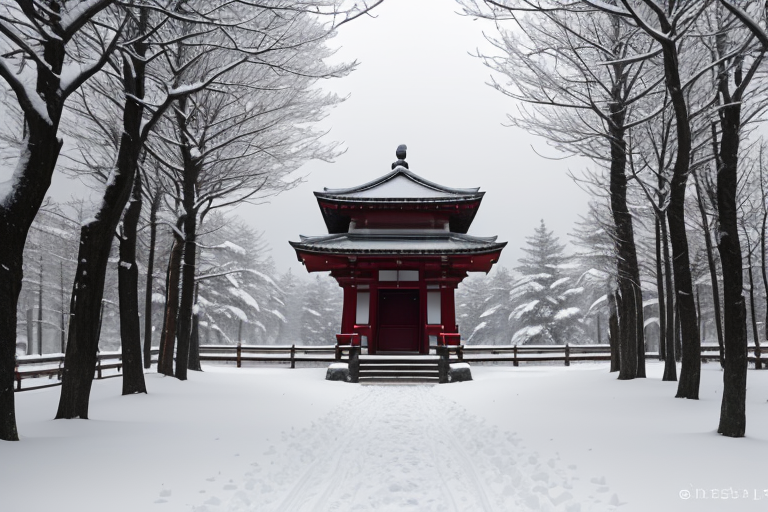
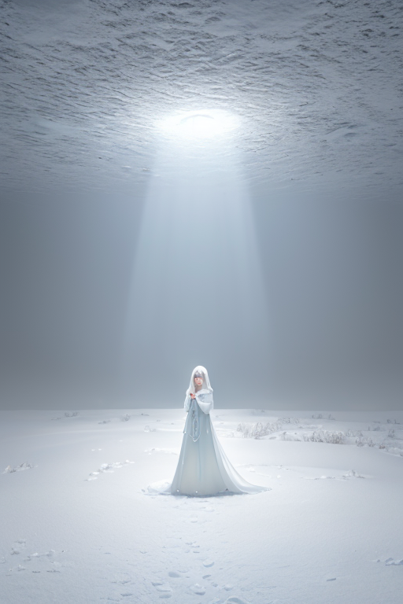
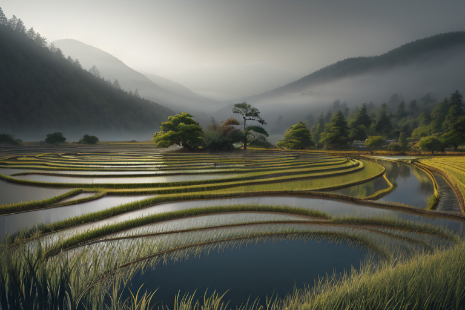
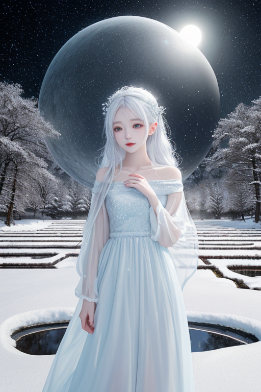
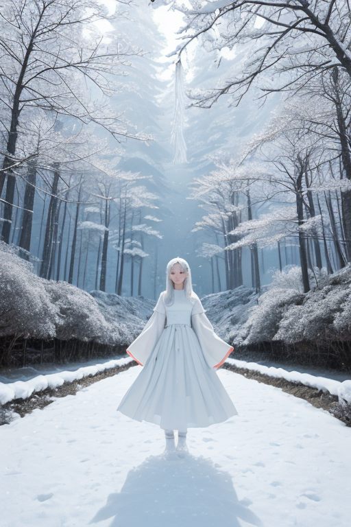

第一章 現実の新潟
あなたはまだ気づいていない。この土地にも、王がいることを。
弥彦神社の森は、雪に埋もれて静まり返っていた。参道の石段は白い毛布に覆われ、時折、梢から雪塊が落ちる音だけが、深い静寂を破る。訪れる人は少ない。冬の間、この地は外界から切り離され、自らの内側へと沈潜する時間を強いる。拝殿の前に立つと、吐く息さえも吸い込まれてしまいそうな、圧倒的な「余白」が広がっていた。それは物理的な空間ではなく、音も、色も、動きもない、心の状態そのものだ。
その余白の中心に、一人の青年が佇んでいた。厚い外套に身を包み、無表情で社殿を見つめる。彼こそが、この地に遣わされた王、ニイガリア・アルバである。彼の目には、この土地に蓄積する「歪み」が見えている。日本海溝から伝わる巨大な圧力、雪の重みで緩みゆく地盤の微かな軋み。彼の役目は、それを調整すること。消すことはできない。ただ、ほんの少し、その衝撃を和らげ、タイミングをずらすことだけが許されている。
「余白に何を書く？」
彼の内側で、星から与えられた問いが、雪のように降り積もる。感情を持たぬはずの王の胸に、この土地の長い沈黙が、どこか切ない何かを育て始めていた。

第二章 歪みの兆候
星峠の棚田の水面は、冬の訪れと共に氷の鏡となった。その下、深い地中で、日本海溝から押し寄せる巨大な歪みの波が、雪の重みで柔らかくなった地盤を、ゆっくりと押し上げようとしていた。ニイガリア・アルバは、その圧力を掌で感じる。消せない。彼にできるのは、その力を少しだけ分散させ、地盤の「耐える時間」を僅かに延ばすことだけだ。
彼の傍らで、主席妖精アルバナが静かに息を吐いた。吐息は白く凍り、無数の微細な結晶となって降り注ぎ、積もる雪の層に微かな緩衝材を追加していく。過剰な圧力の一点集中を防ぐ、忍耐の作業だ。
「歪みは、増している」
彼の内側で、問いが反響する。余白に何を書く？ この圧力の行き場のない余白に。彼は目を閉じ、土地に満ちる祈りに耳を澄ませた。弥彦神社の静謐な気配、佐渡金山の坑道に刻まれた無数の願い、豪雪に耐える家々の灯り。それら祈りのエネルギーそのものが、今、歪みの前触れに揺らいでいる。微かな乱れ。それは、災害そのものより前に訪れる、心の地盤の緩みだった。

第三章 王の葛藤
星峠の棚田に、最後の雪解け水が鏡のように張っていた。ニイガリア・アルバはその余白の水面に己を映す。問いは深まる。余白に何を書く？ 圧力を分散させ、緩和するだけが己の役目か。上杉謙信が「義」を掲げたこの地で、ただ耐えることだけが「忍耐」なのか。佐渡金山の坑道のように、自らの内にも暗く深い迷路が広がる。
感情。この土地から滲み出る、酒造りの職人の執念、雪に閉ざされながらも灯を絶やさない家族の温もり、春を待つ稲の種の静かなる意志。それらが彼の内に流入し、無色だった心象に藍の影を落とす。苦しみとは違う。悲しみとも異なる。それは、この地のすべてを「知って」しまった者が負う、重い愛に似ていた。
彼は掌を広げ、虚空に触れる。歪みの圧力は、棚田の水面にさざ波を立てる。それを鎮めることはできる。だが、波紋の根源にある人々の不安までは消せない。王たるもの、感情を持つべきではない。しかし、持たざるを得ないこの矛盾こそが、最大の余白なのか。彼は、ただ、その水面の揺れを見つめ続けた。

第四章 妖精との対話
星峠の棚田の水面は、やがて鏡のように静まった。王の傍らで、雪の精霊アルバナが微かに光る。その声は、風に乗った雪片のようだった。
「我々は、祈りを『書く』者です」
彼女は言った。歪みの圧力は、人々の心に余白を穿つ。その空白に、不安や絶望が先に染み込まぬよう、静かな祈りを一筆、一筆、書き込む。佐渡金山の坑夫が地底で呟く家族の名も、越後湯沢の宿で旅人が窓外の雪を見つめる沈黙も、すべては無形の祈り。それを集め、整え、圧力の奔流にそっと織り込むのが、彼女の役目だ。
「祈りは、災いを消しません。ただ、受け止める魂の器を、ほんの少し強くするだけです」
王は問うた。「その器の余白には、何を？」
アルバナは、眼下に広がる棚田の雪原を指した。春には水が張られ、秋には黄金の稲穂が揺れる。永遠の空白などない。ただ、季節ごとに、その時を生きる者たちが、自らの生で埋めていくための、静かな受け皿があるだけだ、と。
「書くのは、あなたでも、私でもありません。この地で息づく、すべての生そのものです」
王は、その言葉に、深い雪に覆われる森の静寂を思い出した。

第五章 微調整と余韻
星峠の棚田に、最後の雪が融けていた。水を張られた田は、無数の鏡となり、空と山を静かに映し出す。それは、一年で最も大きな余白の時である。アルバナはその水面に立ち、目を閉じた。地中を流れる微細な歪み、春の雪解け水が運ぶ圧力、そしてこの地に生きる人々の、豊作を願う祈りの波。それらすべてを、彼女は雪のように優しく受け止め、分散させていく。
王は、弥彦神社の森の奥深くで、それを感じ取っていた。感情という名の波。それは災害ではない。あまりに濃密で、時に自らを圧し潰さんとするほどの、生の証。彼は、その波が暴走せぬよう、静かに、静かに調整する。上杉謙信が戦場で見たであろう雪原の如く、すべてを一度白く覆い、沈黙を与える。その沈黙の余白の中で、初めて、個々の声が、個々の祈りが、混ざり合うことなく、清らかに響き始める。
清津峡の渓谷に、雪解けの水音がこだまする。それは調整の余韻だ。王も妖精も、何かを創りはしない。ただ、過剰を削ぎ、均衡を保ち、この地がこの地であり続けるための、空白を用意する。コシヒカリスが稲穂に宿る光を安定させ、アルバナが圧を緩め、王が静寂を紡ぐ。やがて棚田の水面に、新しい苗が映る頃、その余白には、人々の営みという、穏やかな文字が記されるだろう。
あなたの町にも、王がいる。